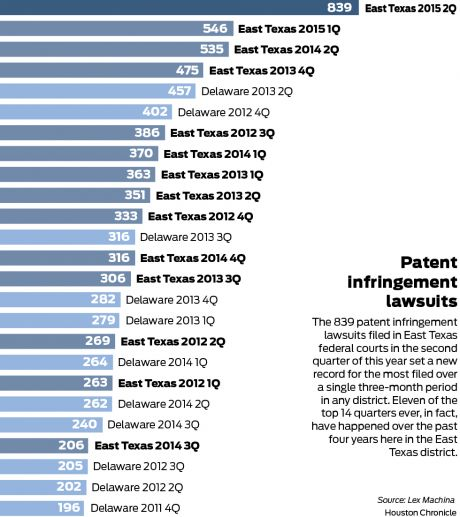

09.17.15
Posted in Europe, Patents at 2:15 am by Dr. Roy Schestowitz
Chinese labour and Internet standards in Europe

Summary: The management of the European Patent Office (EPO) continues to increase its repressive assaults on EPO staff, essentially blocking access to additional sites which explain what the EPO is really doing and why this is wrong
COINCIDING with staff protests/demonstrations (but not strikes) that took place on Tuesday, the muzzling of Florian Müller gets reported. “EPO leadership pressured SUEPO to remove link to my blog from its homepage,” he told me earlier this week, shortly after writing that “In July it became known that the EPO blocked examiners’ access to TechRights” (source), correctly adding that it merely invokes more backlash. The “recommended reading for whomever at the EPO [...] prohibit links to this blog: the Streisand effect.”
The EPO is possibly trying to block (censor) evidence of the censorship itself. That’s how pathetic they’re becoming now. Are they really willing to go down this rabbit hole?
“Document temporarily removed due to threats of reprisals from EPO management,” says SUEPO’s public page in numerous places (with slight variations). “SUEPO is taking appropriate action to counter the threats.”
Well, welcome to the European Union’s most corrupt organisation, where censorship is part of the plan to hide evidence of the corruption, and sites that cover the censorship are themselves being censored, too. China or Russia are where one might expect such behaviour, not the European Union.
So, the EPO is now censoring/filtering/blocking yet another blog, and for what? It’s not as though the staff cannot access these sites from their mobile devices or their homes. Not many staff would be ‘brave’ enough to access sites critical of the EPO from within the premises of the EPO anyway, especially now that widespread surveillance (including cameras and keyloggers) is common knowledge among staff.
It seems likely that Müller became a target of censorship and suppression after he had posted a letter or a bunch of letters which the EPO’s management does not want to be public, for it proves bad behaviour. It actually started in Techrights and as Müller put it on Tuesday: “Last week, the TechRights blog published a letter by the head of the EPO’s investigative unit to Elizabeth Hardon, the chairwoman of the Munich chapter of the Staff Union of the European Patent Office (SUEPO), summoning her to a hearing last Thursday. I also blogged about this development because it shows that the promise of “union recognition” is just a carrot the EPO leadership has been dangling to staff without any genuine desire to improve the internal climate.
“Mrs. Hardon has probably never been at a greater risk of being fired, and the EPO is now not only talking about that scenario but additionally threatening “to take any other legal measures against [her]” over the alleged disclosure of the letter that was published last week.”
Any letter with threats in it is likely to spread sooner or later (at Techrights we never know the identity of our sources), so the EPO’s management must have been foolish to assume that it’ll never be leaked or sent out to a reporter at some stage. It merely proves that this management is incompetent. It believes that silencing opposition will work rather than continuously backfire and this is why after a relatively calm summer the management comes under fire again. Last week the Dutch media reported on the subject and we now have article translations [PDF]. These were published by SUEPO, which added: “Translations in English, French and German are available by scrolling through the document. The article was also published in the paper version of 10 September 2015.”
Here is the article’s text in English:
EPO President Benoit Battistelli. © ANP
Alarm about reign of terror at the European Patent Office after fifth suicide
The union Suepo has raised the alarm about the suicide of an employee at the European Patent Office (EPO) in Rijswijk. According to Suepo, poisoned working conditions may have contributed to the fifth suicide in three years at the Patent Office.
By: Anneke Stoffelen, 10 September 2015, 02:26
The European Patent Office employs around 7000 staff, spread over five offices in different countries, who evaluate patents for 38 affiliated member countries.
Staff representatives have previously raised the alarm about the reign of terror apparently being conducted by French EPO President Benoît Battistelli. According to Suepo, the work pressure has increased enormously under his leadership and changes to working conditions have been forced through by Battistelli unilaterally. Anyone who expresses criticism can expect reprisals.
Together with a number of other member countries, the Netherlands has expressed its concerns about the entrenched social climate within the EPO. In a letter to the Lower House in July, State Secretary for Economic Affairs Dijksma wrote: ‘Partly as a result of these signals a ‘social dialogue’ has been launched between management and staff representatives’.
A 42 year old employee in Rijswijk committed suicide in August, on the last day of his holidays.
However, the situation has not improved since then. In a letter to the 38 representatives of the EPO countries that supervise the organisation, the union has now raised the alarm about the death of the 42 year old employee at the Rijswijk office. He committed suicide in August, on the last day of his holidays.
It is the fifth time in just over three years that an EPO employee has committed suicide. In 2013 an employee jumped from the seventh floor of the office building in Rijswijk during working hours. The other three cases of suicide related to staff at the EPO head office in Munich.
France Telecom
In its letter, the union Suepo draws a comparison with the situation at France Telecom, which in 2008 and 2009 was afflicted with a wave of suicides amongst staff. The union wants the management of the EPO to assist with an independent investigation into the working conditions at the Patent Office.
On 26 August the union wrote a letter to Battistelli requesting a meeting about the potential measures for improving the work situation, however, so far the EPO President has refused to grant such a meeting.
“It is tragic that Suepo is once again abusing a personal tragedy and inciting controversy”, President Battistelli in a letter to the union.
‘It is tragic that Suepo is once again abusing a personal tragedy and inciting controversy, when condolences should be in order’, wrote Battistelli to the union. ‘The link that you appear to be drawing between the death of a colleague and recent reorganisations and the working atmosphere in general, seems totally inappropriate.’
Suepo says that a direct link between the suicide and the working conditions has not been demonstrated but that the Labour Inspectorate should be given the opportunity of
investigating this tragedy.
However, the EPO is not obliged to assist with such an investigation because as an international organisation it enjoys legal immunity. Consequently, the EPO management can also disregard a ruling by The Hague Court of Appeal with impunity. In February, the Court of Appeal ruled that the EPO was in breach of human rights by obstructing the activities of the union.
For other translations see the original PDF. █
Permalink
Send this to a friend
09.14.15
Posted in America, Asia, Europe, Patents at 2:38 am by Dr. Roy Schestowitz
Summary: A roundup of news of interest regarding patents, especially software patents whose impact on Free/Open Source software is exceptionally profound
THE NEXT couple of weeks will be quiet for this site because we’re taking a two-week break. Before we go, however, here are some important news from around the world.
Europe
There is an EPO demonstration tomorrow. It tackles issues that relate to human rights, not to software patents or the UPC, but nonetheless, those latter issues too are a growing threat to European interests. According to a lawyers’ site, UPC’s “new regime will sit alongside rather than replace the existing patent system and will therefore require businesses to make careful choices about how they intend to protect their inventions and enforce their patent rights.
“The decisions they take could affect their patent litigation strategy and exposure to risk for years afterwards.”
All one needs to know about it is that it is going to empower international/multinational companies and their patent lawyers. For everyone else it’s a slap on the face.
India
We have been writing a lot about India as of late, in relation to software patents. Dr. Glyn Moody has a good article on this subject, comparing what India is doing right now to what Europe has been doing in recent years (since the Alison Brimelow days). To quote Moody: “These are very similar to the exclusions listed in Article 52 of the European Patent Convention (EPC), which governs patent law in Europe. And where the EPC uses the phrase “as such” when it comes to computer programs, the India exclusions contain the equivalent phrase “computer programme per se”. As Techdirt readers know, the inclusion of “as such” as a qualifier to the exclusion of computer programs from patentability has opened up a huge loophole through which clever lawyers have driven many thousands of software patents. The fear — quite justified — is that exactly the same will happen in India because of the new guidelines’ interpretation of what that “per se” phrase means…”
Indians will hopefully stand up and fight this injustice. It’s a form of colonialism in the patents sense, akin to what large pharmaceutical companies are trying to do in this vast market (many potential ‘customers’).
United States
A few days ago we learned about yet another defeat for software patents in the United States.”Five Blue Spike Patents Killed by Alice/101,” Patent Buddy wrote the other day, linking to this decision [PDF]. Notice the defendant; it’s a common target of Microsoft.
The patent maximalists from IAM are meanwhile reporting that ZTE, an Android player which we mentioned here recently for patent assaults on it (from Microsoft and its trolls), wants to “develop high-quality patent assets” (complete nonsense expressed using the language of patent propagandists). To quote the maximalists: “The average US consumer might not be familiar with the ZTE brand, but the latest figures from global intelligence firm IDC show that it has moved into fourth place in the American smartphone market, behind Apple, Samsung and LG. The Chinese company grabbed an 8% share of sales in the second quarter, up from just 4.4% at the start of 2014. ZTE has not exactly consolidated its gains yet, but its impressive growth offers a tentative success story for other would-be market entrants from China.”
The last thing ZTE needs in the world, including the lucrative US market, is more patents. Let’s hope that the US system will be healed over time, obviating the perceived need for such wasteful strategies that artificially elevate the price of products (lawyers’ tax).
“Let’s hope that the US system will be healed over time, obviating the perceived need for such wasteful strategies that artificially elevate the price of products (lawyers’ tax).”Reporting from the AAMA webinar, AAMA Info wrote: “The patent troll itself admitted that less than 3 percent of such lawsuits ever make it to trial,” adding that “97% settlement rate suggests a very good return on investment for the patent troll!”
Matt Levy wrote that he “was on a panel the other day discussing patent reform, and a funny thing happened. While we disagreed about a number of aspects of patent reform, basically everyone on the panel agreed that it’s ridiculous for one district (i.e., the Eastern District of Texas) to host so much patent litigation.
“Even those on the panel who didn’t like the current venue provision in the Innovation Act felt that it just needed some small tweaks in the language. They agreed with the basic approach of venue reform.”
We are still hopeful and very much positive about the US patent system because it seems to be moving more in the direction of hostility towards software patents, whereas India and Europe go the other way. █
Permalink
Send this to a friend
Posted in Apple, Asia, Bill Gates, GNU/Linux, Google, Microsoft, Patents, Samsung at 2:08 am by Dr. Roy Schestowitz
Summary: Microsoft continues its long journey towards ‘Linux tax’ (or Microsoft tax on Linux) as the ‘standard’ while trying very hard to derail Android and prevent nations from moving to Free/libre software
THE bubble of ‘good’ Microsoft is being burst on a daily basis because the company keeps — and sometimes even enhances — its hostile behaviour, having just taken away software from Android [1, 2], engaged in yet more “embrace, extend, extinguish” tactics against Android, and then started recording Android users remotely (always on), as reported by Mary Jo Foley and other Microsoft propagandists (Microsoft’s special relationship with the NSA notwithstanding). Based on this new article from IAM, there is also a monopoly being shielded here, with the prospect of litigation against Google and others (for royalties or product removal). “A new study by technology consulting and litigation support firm iRunway,” says IAM, “has analysed the patent landscape around speech recognition technology, finding that Microsoft and specialist company Nuance lead the way. The report highlights the growth in patent filings over the last 10 years as companies have made significant strides in the development of technology in this area.” Just watch how Apple has been suing Samsung. It is still pursing high royalties through a settlement. It wants “hundreds of millions of dollars”, as an Apple proponent/Android foe put it. Much of that is for software patents and it is the same strategy Microsoft has been sticking to for much longer than Apple.
Make no mistake about it. There is no 'new' Microsoft except a Microsoft that engages in patent racketeering against Linux and Android. There are only faceplate changes, site changes, logo changes, etc. The company is as aggressive as ever before.
“Make no mistake about it. There is no ‘new’ Microsoft except a Microsoft that engages in patent racketeering against Linux and Android.”Several years ago we noted that Microsoft had promoted Horacio Gutierrez, who is now a Microsoft Vice President. Microsoft was emphasising a litigation route, making it abundantly clear that patent extortion against Linux was a growing strategy. Anti-Linux patent men are once again being promoted inside Microsoft as Smith becomes President. Recall all the anti-Linux rhetoric from him and mind the “astroturf in the comments,” as noted by our reader iophk. Smith is an aggressor, so the way we interpret the news is, anti-Linux litigation is only further promoted (not demoted) as the strategy. Watch what Microsoft has been doing with Tuxera, putting and reinforcing patent tax as part of the ‘standard’ inside Linux. Here is a new press release from Tuxera and partners — a statement which says:
iWedia, a leading provider of software solutions for TV devices to service operators and Consumer Electronics manufacturers, today announced that it has integrated its Linux-based Teatro-3.0 Set-Top Box (STB) software solution for IP-connected zappers with the AllConnect streaming technology of Helsinki-based Tuxera, the market leader in embedded file systems, network storage and streaming technologies.
Well, Tuxera is a Microsoft partner and it pays Microsoft. This is the sort of GPL-hostile future Microsoft is after. Microsoft is trying to make Linux its own cash cow. Yes, cash cow! It’s an assault on the very heart of Free software. It impedes distribution rights.
Speaking of underhanded tactics such as these, the Gates Foundation is being used as a Trojan horse by Bill Gates, who is now an integral part of Microsoft’s management and according to this report China’s “President Xi is set to also have a private dinner with Microsoft co-founder Bill Gates before leaving Seattle for Washington.”
Another report says “President Xi will also be visiting and meeting with Microsoft founder and philanthropist Bill Gates, even before he visits Obama in Washington.”
“That makes Xi look very weak,” iopkh wrote to us. It’s not the first time that this happens. The same kind of story was reported here almost decade ago, back in 2007.
“Yes,” iopkh noted, “it’s happened with other presidents of China. It makes them look very foolish, to keep it polite.”
Our worry is that China will lift its ban (in government) on Office and Microsoft Windows, maybe after some ‘sweet’ (behind closed doors) deal with Gates, who is now officially back at Microsoft (in functional terms). At the moment, China is rapidly moving to GNU/Linux at many levels, not just when it comes to mobile devices but also when it comes to servers and desktops. We wrote a lot about it. China not only explored Free software, but also began moving to it en masse. It’s the world’s largest market and trend setter.
Don’t believe for even a moment that Microsoft has changed for the better. It’s just more discreet about its constant attacks on Free software. █
Permalink
Send this to a friend
09.12.15
Posted in Europe, Patents at 12:32 pm by Dr. Roy Schestowitz
But Battistelli continues to deny there is a problem and won’t fall on his sword (no joke/entertainment but an idiom)
Summary: Instead of EPO staff driving away the corrupt management, it’s the management crushing staff unions and driving away the staff (causing brain drain), or driving some to suicide
THE SELF-DEFENCE we often hear from the EPO, including from Battistelli in person, is that the number of suicides at the EPO is not statistically unusual. Some EPO apologists say the same thing, often without checking and actually comparing statistics.
Dutch newspapers have written about the suicides in recent days (they deem it worthy of a mention, not opportunism or a distortion of facts) and over at IP Kat, having read the automated translations of these articles, “Merpel urges the Administrative Council (AC) to act, and to act quickly. Discussions about whether the Office has immunity from employment law or is exempt from the prevailing standards of employee care throughout the EU are not only immaterial, they are repugnant in the present circumstances. Each AC delegate should take individual responsibility to ensure that the next time such a personal tragedy occurs, nobody thinks it newsworthy and nobody links it to the EPO as a place of employment.”
A lot of new information (however unverified) can be found in the comments. One commenter wrote: “I am not sure that SUEPO did the right thing, making the matter public, but the reply of the President is shameful as well. Even if the death cannot be linked directly linked with the working conditions, claiming that everything is honky dory is a blatant lie. That he respects the dignity of staff is just laughable. ”
SUEPO did not make the matter public, it was first reported in Techrights last month and all along we tried hard to protect the identity of the person in question (the first person to mention the name in correspondence was the EPO’s Ciaran McGinley, PD Patent Administration, and later Battistelli). Even in private correspondence with Battistelli SUEPO consistently abstained from name-dropping, even after Battistelli had done that.
“The suicides don’t surprise us at all given the management’s bullying, euphemistically called “interrogation” (maybe we should dub it Battistelligence).”IP Kat has many comments that are interesting because some of them add new information and the posters often come from within the EPO (both the management and those below the management). One person shares this story: “I know the widow of one of the EPO suicided colleague. She really wanted an independent investigation. Then the EPO informed her that such request of investigation is inappropriate. Such behavior will postpone the payment of all the allowances. (+/- 4 years of procedure for the internal appeal, then +/- 4 additional years for the appeal at the ILOAT).
“The direct consequence: the widow and her children would be left without money and without social security for 8 years.
“This wife was desperate by the dead of her husband. She couldn´t face additional money problems and she had to cooperate with the EPO.”
Here is some unverified bunch of historical statistics about suicides at the EPO: “I believe that what is striking here is the INCREASE of the suicide rate at the EPO, which were 3 (three in total !) in the more than 30 years between 1977 and 2009.
“This means that the suicide rate changed in 2010 from 1 every 10 years to 1 every year.”
The suicides don’t surprise us at all given the management’s bullying, euphemistically called “interrogation” (maybe we should dub it Battistelligence). It’s militarised. Maybe one day we will expand on what exactly happens behind closed doors and who is doing that.
“Nothing is done to lower the work pressure,” one person writes, “on the contrary + nothing is done to stop the brutal management methods on the contrary = further suicides among the weakest staff are likely to soon occur at the European Patent Office.”
It would not shock us at this stage. The EPO is now bullying even staff representatives. How dumb a move.
One person correctly pointed out: “The point is surely that such tragedies demand a proper investigation. Precisely because of its claim to blanket immunity, the EPO is in loco the state for many aspects of its employees’ lives. In the outside world a suicide IS investigated by a coroner’s court in the UK (I am not sure about what happens in continental law), and such investigations sometimes lead to recommendations for prevention. On a large scale the epidemiology of suicide is studied by governments as a basis for preventive policies. The exclusion of suicides by EPO employees from any such investigation is completely unacceptable.”
SUEPO has meanwhile shared this Dutch interview from NPO Radio 1, titled “Verziekte arbeidsomstandigheden bij Octrooibureau in Rijswijk” (it’s all in Dutch).
To quote SUEPO, “Ms Liesbeth Zegveld, SUEPO lawyer and Mr John Kerstens, Member of the Dutch House of Parliament (Tweede Kamer PvdA) were interviewed on 10 September 2015 on the Dutch channel Radio 1 over the “unhealthy working environment” in the European Patent Office.”
We would really appreciate translations from Dutch to English. These would broaden the reach of this scandal and allow MEPs whose Dutch is zilch to become better informed. █
Permalink
Send this to a friend
09.11.15
Posted in Europe, Patents at 7:49 am by Dr. Roy Schestowitz
Summary: The intrinsically political activity of EPO management serves to demonstrate that higher agenda is being pushed at the behest of private interests, discrediting any portrayal of EPO officials as public servants
THE corrupt EPO management is now openly promoting the unitary patent (UPC) in the EPO’s Web site and in Twitter. It is becoming more of a political entity, not just an organisation whose goal is to decide what merits a patent given the law (handed down from above). This is rather gross and it’s unsettling to observe.
“Meeting in Rome,” says the EPO’s site, “EPO President Benoît Battistelli and Italy’s Under Secretary of State to the Ministry of Economic Development, Simona Vicari, discussed the role of patents in supporting innovation and the upcoming introduction of a European patent with unitary effect for the EU member states. After clarification of important legal questions on the unitary patent by the Court of Justice of the EU Italy has initiated the process to participate in the new patent scheme which is expected to become operational in 2016.” Battistelli is now acting more like a lobbyist or a politician, akin to Michel Barnier and Charlie McCreevy before him. This isn’t what the EPO should be doing. It’s overreach. Ultimately, if Battistelli gets its way, his mates in giant corporations can end up suing companies all across Europe in one fell swoop. Patent lawyers’ sites in Europe are jubilant of course, as they can get a share of the loot.
Thankfully, the abuses of the EPO’s management are making it into the media again. The major Dutch papers have just covered it and although we don’t have English translations (not yet anyway), SUEPO has this outline:
De Volkskrant (printable version) reports on the fifth suicide since 2012 at the EPO and the persistent refusal of Mr Battistelli to let the Labour Inspectorate enter the premises. A similar article was published in De Telegraaf.
“Opinion on the applicability of International Human Rights norms to the internal workings of the European Patent Office” was also shared by SUEPO yesterday (full paper in PDF form), remarking on highly repressive abuses of the EPO against its very own staff, not just European citizens. SUEPO outlined it as follows: “Paul Beckett from Quinn Legal is a lawyer concerned by the plight of EPO staff and has independently assessed the applicability of fundamental rights in the internal workings of international organisations, and the EPO in particular. This document reflects his academic opinion, which may be taken into consideration in further legal work.”
The EPO is definitely out of control. It’s a corrupt organisation led by corrupt officials, some of whom probably belong in jail over many criminal charges. European taxpayers have every right to call if not demand a shutdown, reset, or independent (by an external body) probe of the EPO. It’s not some private entity; it’s supposed to be a public service (not an overpaid clique of friends and family members), but means of oversight/accountability systematically got thwarted by Battistelli. Belated external intervention is imperative at this stage. The EPO’s management is trying to block it by means of intimidation (including scapegoating), or at least stonewalling. █
Permalink
Send this to a friend
09.10.15
Posted in America, Deception, IBM, Patents at 7:36 am by Dr. Roy Schestowitz
Fueling patent lawyers’ propaganda mill, antagonising scientists
“Along with many other computer scientists, I would like to ask you to reconsider the current policy of giving patents for computational processes.
“There are far better ways to protect the intellectual property rights of software developers than to take away their right to use fundamental building blocks.
“I find a considerable anxiety throughout the community of practicing computer scientists that decisions by the patent courts and the Patent and Trademark Office are making life much more difficult for programmers. ”
–Professor Donald Knuth, world renowned algorithms researcher
Summary: The infamous attorney from IBM, who later worked for the ‘Intellectual Property’ [sic] establishment and became Director of the United States Patent and Trademark Office (USPTO), promotes the fiction that software patents are good for the US, despite them helping patent trolls and monopolies/oligopolies (like IBM)
THERE has been somewhat of a stir and a reaction to this paper in favour of software patents [PDF]. It has, as expected, been promoted by pro-software patents sites (and suffice to say, that practically means patent lawyers’ media). There is pushback from people who actually deal with software, including software developers.
“Kappos apparently knows better than the courts what’s good for the country.”Calls to counter the author, who despite courts’ rulings still wants to guard software patents, could be found online, including in IP Watch. Hugo Roy (FSFE) reacts with: “Arguing that the US software market is thriving *because* software is patentable there.”
This makes no sense at all, but then again, consider who the author is. It’s the former head of the USPTO, who repeatedly pushed for software patents, defended them, arguably expanded their scope, and collectively belittled their critics, just like his former employer (IBM). He is not a scientist but a lawyer or “an attorney” (putting aside a bachelor’s degree from over three decades ago). He is current Partner at Cravath, Swaine and Moore, i.e. a law firm. David Kappos is a proponent of software patents, which are falling, failing, burning and crashing after the SCOTUS ruling on Alice. Kappos apparently knows better than the courts what’s good for the country. Here is what IP Watch wrote last week:
In a clarion call to policymakers, former United States Patent and Trademark Director David Kappos said recently that this year’s unprovoked drop in patent filings in the United States is unprecedented and signals a shift toward more secrecy by inventors trying to protect their ideas. Meanwhile, the US trend toward antitrust actions at home is having deleterious effects for US businesses overseas, he said.
The paper from Kappos is long, so we have not read it yet (only took a glance). It’s too long to rebut on a point-by-point basis, unless we spend a day or so embarking on the task (it’s a resources issue, not a feasibility issue). Based on the above, Kappos tried to excuse the fall of patents by blaming it on “secrecy by inventors” (no pursuit of monopolies with a negative connotation like secrecy, as if they’re doing something suspect or suspicious). To be fair, it’s not a direct quote from Kappos, but if that’s a point which he actually made, then his argument is extremely weak. Pretty much all arguments in favour of software patents (weighing the downsides too) are ludicrous at best, especially when viewed from the angle of software developers. Kappos’ message was only promoted by pro-software patents sites and patent lawyers’ media, as one might expect. We are talking about sites like ManagingIP, which are now organising “European Patent Reform Forum in Munich” (almost definitely stuffed with patent lawyers and no scientists on the panel/s).
IAM, another site of patent lawyers, has been repeatedly arguing with me over at Twitter (for 3 days in recent days) about its biases and views on patents. They are so easy to beat in a debate that they end up admitting that the “vast majority of patents” have no value and “do nothing”. Yes, they actually said that, contradicting their own marketing pitch. These people even tried to oppose the characterisation of patents as a monopoly, even though David Kappos was quoted as calling them a “20-year monopoly”.
Here is IAM showing us that the “worldwide head of IP strategy at IBM” is now moving on, just like Mr. Kappos. Here is where he is heading: “European licensing powerhouse Technicolor has made a major new appointment. Arvin Patel – previously senior VP of IP and licensing at Rovi, and before that worldwide head of IP strategy at IBM – has joined the French company as its chief IP officer.”
He is joining somewhat of a patent troll, or a patent aggressor at the very least.
Recall the time when IBM’s patent chief/strategist (Marshall Phelps) defected to Microsoft and established the company’s patent war against GNU/Linux and Free software, which IBM pretends to be ever so supportive of (despite IBM being a predominantly proprietary software company that lobbies for software patents all around the world and uses them aggressively for income).
TangibleIP (patents booster) said the other day to another patents booster that “companies such as IBM have a “Troll Division”..IP industry allowing anti-Troll agenda to propagate is not our finest hour” (well, the term “IP industry” is laughable because it cannot be an industry when it’s non-producing; it cannot be an industry at all. Imagine saying “copyright industry” or “trademark industry”).
“Recall the time when IBM’s patent chief/strategist (Marshall Phelps) defected to Microsoft and established the company’s patent war against GNU/Linux and Free software, which IBM pretends to be ever so supportive of…”Going back to the argument of Kappos (formerly IBM) in favour of software patents, he would have us believe that software patents — not military might and international lobbying power for example — give the US its advantage. Watch Japan enforcing a patent monopoly against China, as reported by IAM the other day. One thing that we noted the other day about China is that it allows people to patent software. It probably grants more patents on software than the US does. As Patent Buddy put it the other day: “It is now easier to obtain a software patent in China than in the United States.”
And yet, China does not dominate the field software, does it? Yes? No? Far from it! And Japan can still bully China using patents. There is basically nothing to be gained from such a strategy, unless patents are only to be treated as ‘trophies’ (assuming the perception that they’re analogous to innovation can be perpetuated for much longer).
Recall India’s policy on algorithm-related monopolies. India is making a terrible, suicidal move right now by deciding to allow software patents (this can still be stopped. Even without software patents Indian software developers have been doing pretty well, so why the sudden change? It’s probably designed to stop them (the ‘threat’ of commoditisation to multinationals). As one site of Indian patent lawyers put it a couple of weeks ago: “Last week was a busy week at our patent office!! The Controller General issued clarifications under the Designs Act / Rules, and these examination guidelines under the Patent Act / Rules. I will not do an analysis of the guidelines but simply extract out some relevant parts for our readers. For more our readers can refer to our previous posts on Section 3(k) here, here, here, here, and here, and others. These guidelines are extremely detailed and would definitely be helpful to practitioners, and patentees.”
Well, they are truly unhelpful to India itself, not just to its developers but also to local software companies. These patents would help multinational companies like Microsoft and IBM, not Indian companies, which makes one wonder who the Indian patent office actually works for. Software patents would help the likes of Microsoft and IBM crush low-cost competitors from India.
The US patent system, currently the ‘leader’ in software patents (and their birthplace), is an utter mess. “United 4 Patent Reform” demonstrates the extent of litigation by patent trolls and non-practising parasites. It says that “East Texas accounts for 44% of all patent case filings in 2015.” One even shows the following chart:

Is this what Kappos deems the success of the US system? Bear in mind that the large majority of these lawsuits involve software patents. Some estimate that as many as 70% of troll lawsuits would be eliminated if software patents were deemed invalid and no longer granted by the USPTO. Speaking of the USPTO, Kyle Bass, who was mentioned here as recently as last week (he had been manipulating stocks using patents), calls it a “Kangaroo Court”. To quote the Wikipedia definition of this term, “A kangaroo court is a judicial tribunal or assembly that blatantly disregards recognized standards of law or justice, and often carries little or no official standing in the territory within which it resides. Merriam-Webster defines it as a “mock court in which the principles of law and justice are disregarded or perverted”. The term may also apply to a court held by a legitimate judicial authority who intentionally disregards the court’s legal or ethical obligations.
“ARM sent patent threat letters trying to remove nnARM from the net”
–President of the FFII“A kangaroo court is often held to give the appearance of a fair and just trial, even though the verdict has in reality already been decided before the trial has begun.”
In the above case we have Kappos, who used to head the USPTO, trying to overrule the rulings of many US courts, including (initially) the US Supreme Court. Who do these people think they are? Just like software patents themselves, Kappos makes a mockery of the US courts system and the US as whole.
Last but not least, let’s recall what IBM really is and where it stands on this subject. In reference to an ARM-IBM surveillance alliance (centred around ‘IoT’ hype), IAM wrote: “Absurdly, according to definitions used by many proponents of US patent reform, ARM should be regarded as a “troll”. ”
Well, ask no-one other than the President of the FFII (prominent opponent of software patents) what ARM has done to him. “ARM sent patent threat letters trying to remove nnARM from the net,” he wrote. ARM is not quite what it seems on the surface, It’s actually a British company, not a US company, but misuse of patents for (anti-)competitive purposes is something that Intel does too (it does even worse things).
Attributing the ‘success’ of US software companies to software patents is simply ignoring the facts and disregarding all software companies other than very few giants (except when they themselves were still small). █
“The Company believes that existing copyright law and available trade secret protections, as opposed to patent law, are better suited to protecting computer software developments.” —Oracle Corporation, IBiblio: Oracle Corporation’s position paper on software patents (when Oracle was still small)
Permalink
Send this to a friend
Posted in America, Courtroom, Microsoft, Patents at 6:08 am by Dr. Roy Schestowitz
“The genesis of this idea was when I was at Microsoft.” —Nathan Myhrvold, WSJ: Transcript: Myhrvold of Intellectual Ventures
Summary: Intellectual Ventures suffers another major blow as Alice v. CLS Bank (Alice/§101) smashes software patents in the United States
WE finally have some more good news regarding Microsoft’s pet troll, Intellectual Ventures (IV), which has been funded by and works with Bill Gates.
Patent Buddy, which has been good at tracking the post-Alice aftermath, has found this followup to previous IV v. Capital One losses, “Second IV Patent Asserted Against Capital One Also Killed by Alice/101,” he claims, linking to this ruling [PDF].
This is part of a broader trend because as Patent Buddy put it another day, “101 Patentability-USPTO Bypasses Substantive 103 Examination” (101 refers to Alice).
More software patents were being thrown down the drain by a judge last week. To quote Reuters: “A federal court in Delaware has invalidated a patent on multimedia messaging early in a lawsuit against some of the country’s largest cellphone providers, another example of a controversial trend that critics say wipes out patents before they are fully understood.”
“Anyone who is not intellectually dishonest because he or she does patent ‘business’ for a living would probably acknowledge by now that software patents are on their death throes.”“US business method patent applications down 52.4% since Alice,” moaned the patent lawyers in Twitter, pointing to their new analysis which states that: “Companies have pulled back drastically from filing business method patent applications in the US. Managing IP analysed figures for USPTO applications in patent class 705, the class covering “data processing” in which business method patents are placed.
“Patent applications in class 705 not only plummeted after the Alice decision on June 19 2014, but have kept tumbling.
“Some 8,620 class 705 patent applications were filed in the 12 months between July 1 2013 and June 30 2014. In the same period 12 months later, after Alice, the figure was 4,106 – a 52.4% drop.”
Patent maximalists that glorify the world’s biggest patent troll (IV) are now offering their ‘analysis’ (actually, offering by proxy), claiming that “Software Patents Are Resilient in the Wake of Alice Corp. vs. CLS Bank”.
Yeah, right. And the world is cooling down, too. According to News Corp. and other oil tycoons-connected ‘news’ networks. Anyone who is not intellectually dishonest because he or she does patent ‘business’ for a living would probably acknowledge by now that software patents are on their death throes. █
Permalink
Send this to a friend
Posted in Europe, Patents at 5:30 am by Dr. Roy Schestowitz
Summary: Hoping to ‘pacify’ (euphemism for eliminate) voices of reason, the EPO’s management is now crushing unions in order to make an example out of them (intimidation) and proceed with policies that are unequivocally hostile towards European interests (collectively and per member states)
RIGHT at this very moment the EPO‘s management along with British interrogators are bullying a staff union member. Union-busting takes place at the very heart of Europe and to make matters worse, European taxpayers foot the bills. The EPO has hopefully become a laughing stock which will fail to attract talent (many are already leaving, some by killing themselves [1, 2, 3, 4] to the dismay and denial of Benoît Battistelli), at least until the corrupt leadership resigns and there are true reforms, not just a change of logo and/or a Web site redesign. A lot of damage has systematically been done at an organisational level, let alone the controversial (likely corrupt) staff appointments, by Benoît Battistelli. He changed the system over the years and removed oversight. He (re)built the EPO establishment as though it’s modelled after the Kremlin. Staff rights have been reduced to Chinese standards.
“Actions continue at the European Patent Office (EPO),” says SUEPO’s site today (since yesterday). “The next demonstration will take place on Tuesday 15 September, starting at 12.00h from the Pschorrhöfe complex in Munich.
“From there the demonstrators will march to the local Labour Inspectorate, Gewerbeaufsichtsamt (Heßtraße 130).”
Florian Müller has just shed some light on the union-busting that takes place at this moment and he suggests that “EPO employees who are unhappy about the situation should try to find a better way to vote with their feet than taking to the streets of Munich (and other cities) to no avail. They should quit their jobs at the EPO and take jobs in the private economy. Engineering jobs, especially.”
That would hit the corrupt management where it probably hurts most and make it abundantly evident that it failed to manage. It just drove people away (both staff and stakeholders, including businesses). Battistelli and his millionaire (and billionaire) friends are now moving a step closer to global monopolies on ideas [via Laura F. Ercoli] because judging by this update, they are moving towards the UPC before it’s even authorised or approved by the public. A lot of this happens discreetly (in secret) because the public would never overwhelmingly endorse such a move. “At its meeting on 3 September 2015,” says the site, “the Preparatory Committee agreed the draft proposal for the Rules on the European Patent Litigation Certificate and other appropriate qualifications. The Explanatory memorandum and a copy of the Draft Rules are available.”
Was this meeting even announced anywhere? Who attended? Where were the stakeholders? It’s about as undemocratic as these so-called ‘trade’ deals’ (like TPP). Laura F. Ercoli wrote more on the subject, noting that there is still opposition in Italy. To quote: “Italy has officially confirmed it is joining the unitary patent, but there are clear signs that its politicians are still not reconciled with the use of English, French and German only as unitary patent working languages.”
“Italian politicians still not reconciled with English, French and German as sole unitary patent working languages,” Ercoli wrote.
Pushers/lobbists of the UPC already push ahead with a “Preparatory Committee” — whatever and whoever that is — putting in place “Rules for the European Patent Litigation Certificate”.
They are bringing more patent aggression (litigation) to more of Europe, repeating the errors of some countries (or one country) where patent trolls continue to thrive.
As one might expect, patent lawyers’ sites are happy about this and one writes that “The European Patent Litigation Certificate is the qualification that a European Patent Attorney will be able to obtain in order to have the same rights to conduct litigation at the Unified Patent Court (UPC) as a legal practitioner in a member state which is a party to the Unified Patent Court Agreement (according to Article 48 of that Agreement).”
Notice how patent lawyers in Europe are (re)acting. They write about it as though the UPC is already a reality. Even the patent ‘industry’ (lawyers) in the UK prematurely makes buildings/courts for the UPC, before there is even a referendum or any hard confirmation of the UPC becoming inevitable. Perhaps they think that a self-fulfilling prophecy strategy would work. They are broadening litigation scope because it helps massive corporations and their lawyers (Benoît Battistelli’s mates). As some patent maximalists put it the other day, “Chris Benson of HGF – the Unitary Patent Court won’t eliminate forum shopping- the rules and tactics will just change.” Yes, for the worse, for sure!
For those who haven’t been following the UPC (we have written about it for about 7 years, even when it had different names in its prior incarnations), there are simple ways to get up to date. We recommend a restricted access article from IP Watch (Swiss site), composed two months ago. It is titled “Is The European Unitary Patent System On Its Way To A Tepid Start?”
No doubt there are big plans here to expand the scope of patents, enriching lawyers, providing more protectionism to very large corporations, and essentially pass commonwealth or public wealth to very few hands. It’s a heist or a systemic privatisation of knowledge and wealth. The EPO’s actions can be correlated to a lot of the actions taken by ‘trade’ deal ‘negotiators’ (essentially traitors to their population), so no wonder the EPO has become more militant and aggressive against dissent (which it is rightly expecting).
The EPO is now unambiguously engaging in a war (on dissent), dictating to staff and clearly conveying the message that if they are not 100% on board and in line with Battistelli’s vision, there will be dire consequences. Even for a private corporation such a standard would be deemed unthinkable… █
Permalink
Send this to a friend
« Previous Page — « Previous entries « Previous Page · Next Page » Next entries » — Next Page »


 Content is available under CC-BY-SA
Content is available under CC-BY-SA